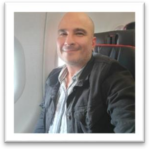

2014–2015 · OIL & GAS
Infraestructura para energía
Dirigí obras civiles y mecánicas para tanques de almacenamiento de 100.000 barriles en los campos Piriri–Rubiales.
Soy Sergio Cobos: sobreviviente, ingeniero y líder de proyectos. Después de una experiencia que cambió mi vida, seguí aprendiendo, trabajando y construyendo caminos. Hoy quiero compartir ese recorrido con jóvenes que también buscan un nuevo comienzo.

Sergio Cobos
En 2008 fui víctima de secuestro. La experiencia dejó una huella profunda, pero no borró mis capacidades, mis proyectos ni mi derecho a construir una vida propia.
Mi camino de regreso no se resume en una frase ni fue igual todos los días. Lo fui construyendo con apoyo, decisiones cotidianas, formación y trabajo. Con el tiempo volví a asumir responsabilidades en proyectos complejos y a trabajar junto a equipos que desarrollan infraestructura para las comunidades.
Comparto esta historia con respeto por quienes han vivido hechos similares. No existe una única manera de sanar o avanzar; cada persona merece hacerlo a su ritmo y con el acompañamiento que necesite.
Estos hitos profesionales son parte de mi recorrido posterior a 2008. Detrás de cada proyecto hay muchas personas, comunidades y oficios.
Dirigí obras civiles y mecánicas para tanques de almacenamiento de 100.000 barriles en los campos Piriri–Rubiales.
Participé en la supervisión de la doble calzada, en un corredor de 84 km entre Nariño y la frontera sur.
Trabajé en la construcción de 21 km de acueducto y 5,2 km de variante vial.
Lideré un tramo de la ampliación a doble calzada como jefe de tramo.
Como jefe de producción, coordiné trabajos de construcción, variantes estratégicas y traslado de servicios afectados.
Completé estudios de Especialización en Gerencia de Proyectos de Ingeniería; el CV indica que el grado y la certificación estaban pendientes.
Mi oficio me ha llevado de la topografía a la dirección de proyectos y a la coordinación de equipos en distintos territorios.
He trabajado en infraestructura vial, concesiones, gasoductos y poliductos, obras civiles, energía e hidroeléctricas, en funciones de producción, residencia y dirección de obra.
Si has vivido violencia, no tienes que demostrar fortaleza todo el tiempo ni recorrer el camino a solas. Pedir apoyo también es una forma de avanzar. Tu historia es más amplia que lo que te ocurrió, y puedes decidir qué hacer con ella, cuándo contarla y a quién.
Yo no tengo una fórmula para todos. Sí puedo decirte que, después de una experiencia que me marcó, volví a estudiar, a trabajar y a liderar proyectos. Ojalá mi recorrido te recuerde que todavía pueden abrirse caminos.
Estoy abierto a conversar con jóvenes, organizaciones, universidades, empresas y aliados que trabajen por la memoria, la dignidad y las oportunidades para las víctimas.